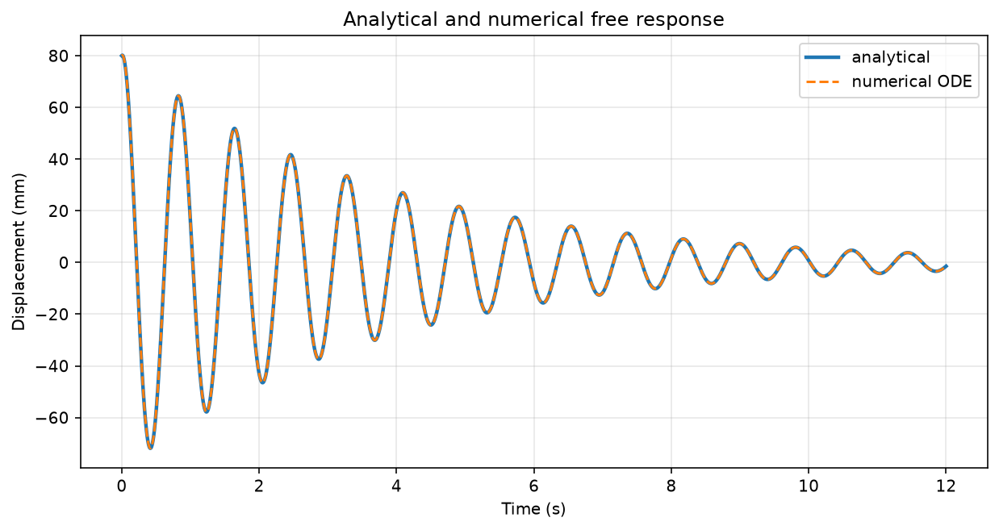
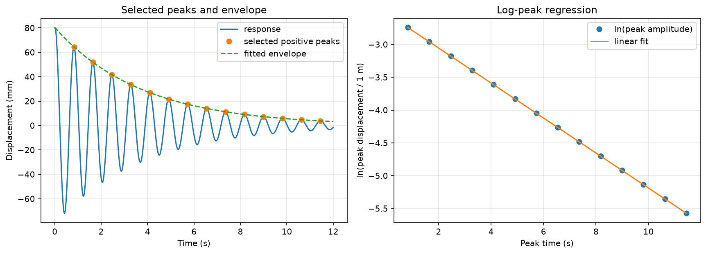
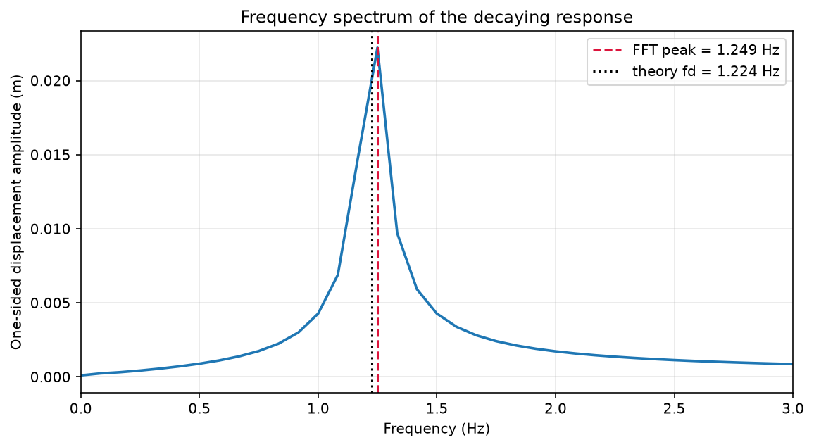
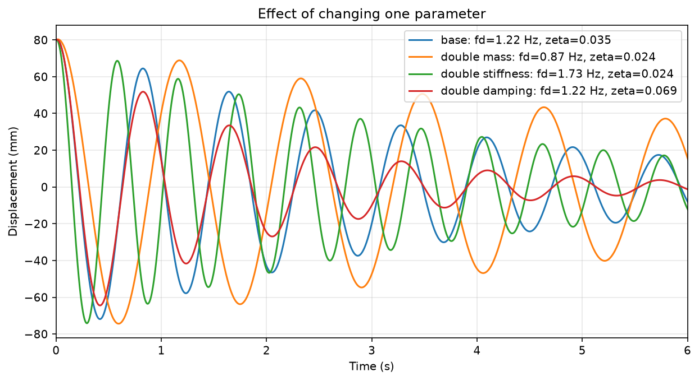

Fall 2026 · Worked solutions
Pre-Lab 4 · Spring–cart free response
Reference answers and figures for the Fall 2026 notebook. The numbers below are from the supplied simulations.
1. Compute the model parameters
Use m = 1.35 kg, c = 0.72 N·s/m, kL = 34 N/m, and kR = 46 N/m. The two restoring force changes add.
| Quantity | Calculation | Result |
|---|---|---|
| Equivalent stiffness k | 34 + 46 | 80.0 N/m |
| Natural angular frequency ωn | √(80 / 1.35) | 7.6980 rad/s |
| Natural frequency fn | ωn/(2π) | 1.2252 Hz |
| Damping ratio ζ | 0.72 / (2√(1.35 × 80)) | 0.034641 |
| Damped angular frequency ωd | ωn√(1 − ζ²) | 7.6934 rad/s |
| Damped frequency fd | ωd/(2π) | 1.2244 Hz |
| Decay rate α | 0.72 / (2 × 1.35) | 0.26667 s⁻¹ |
2. Predict the changes
Doubling mass lowers frequency and halves the decay rate because k/m and c/(2m) both decrease. Doubling both stiffnesses raises frequency while leaving the decay rate unchanged at fixed m and c. Increasing damping at fixed mass and stiffness increases α and slightly lowers fd in the underdamped range. In the lab, weigh the cart again if the hardware changes its moving mass.
3. Analytical versus numerical response
The closed-form coefficients are A = x0 = 0.0800 m and B = (v0 + αx0)/ωd = 0.007972 m. Substitution gives x(t) = exp(−0.266667t)[0.0800 cos(7.69338t) + 0.007972 sin(7.69338t)] m, with t in seconds.

Both methods solve the same ODE with the same initial conditions. Agreement checks their consistency. Real effects such as rolling friction or speed-dependent eddy-current damping can make the measured cart differ from both curves.
4. Estimate damping from the peaks

The log-peak slope is −α. The fit gives α ≈ 0.26669 s⁻¹ and ζ ≈ 0.03464, with R² = 1.000000 to the printed precision. Using unrounded values, absolute relative differences from the inputs are about 0.0075% for α and 0.0123% for ζ. Compare peaks on the same side so adjacent selected peaks span one full cycle. Alternating positive and negative extrema would span half cycles and would require a different conversion.
5. FFT interpretation

The FFT and theory differ by about 0.0250 Hz, within one bin (Δf = 1/(2401 × 0.005 s) ≈ 0.0833 Hz). A finite record spreads energy across nearby bins. Decay also broadens the spectrum. Peak height and width depend on record duration, windowing, initial amplitude, and scaling, so use the time-domain decay fit for damping.
6. Compare the parameter cases

| Case | fd (Hz) | α (s⁻¹) | ζ | Effect on the trace |
|---|---|---|---|---|
| Base | 1.2244 | 0.2667 | 0.03464 | Reference |
| Double mass | 0.8661 | 0.1333 | 0.02449 | Peaks farther apart, slower decay |
| Double stiffness | 1.7321 | 0.2667 | 0.02449 | Peaks closer together, same decay rate |
| Double damping | 1.2222 | 0.5333 | 0.06928 | Peak spacing barely increases, much faster decay |
Use ωd = √(k/m − α²) to explain peak spacing and α = c/(2m) for the envelope. Unchanged α means the same exponential rate even if the envelope coefficient shifts slightly. Rolling or dry friction can produce a non-exponential envelope even with no magnets.
Final interpretation checkpoint
A 49% larger FFT peak could come from a larger release displacement, a different window or record length, a different unit scale, or a change in damping. Patterned residuals suggest that some structure remains unmodeled. Check for effects such as friction, drifting equilibrium, or velocity-dependent losses. Reweigh the moving cart after attaching magnetic hardware because its mass enters both the frequency and damping calculations. Keep simulated results separate from real CSV measurements and record each trial's configuration and sampling settings.